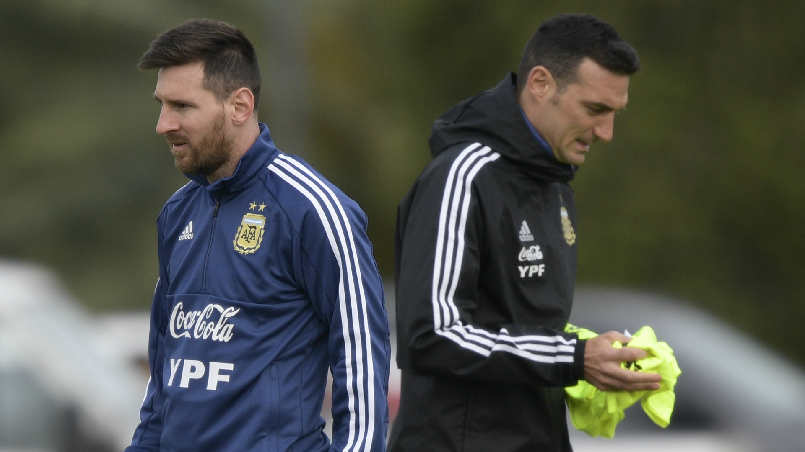
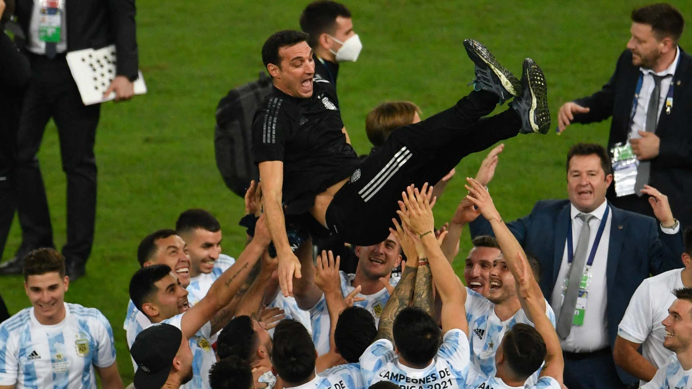

Nueva era, nuevos cambios.
El rotundo fracaso en la Copa del Mundo de Rusia 2018 hacía pensar que la Asociación del Fútbol Argentino se inclinaría por un técnico consagrado para suceder a Jorge Sampaoli. Sin embargo, tras una búsqueda que se encontró con negativas de Simeone, Gallardo o Pochettino, la decisión fue apostar por Lionel Scaloni , de nula experiencia a nivel clubes y con apenas un paso por las juveniles de la Albiceleste como único antecedente al frente de un plantel. .
Fue Scaloni, nomás, en los tiempos del streaming y las redes sociales. El hombre cuyo primer trabajo oficial como entrenador de un conjunto mayor fue… el seleccionado argentino. Pasantía, contrato temporal y a prueba, y, finalmente, trabajador efectivo en las “grandes ligas”. Llámenlo como quieran. La metáfora no intenta trazar el lineamiento laboral argentino ni meterse dentro de un estatuto. Pero fue más o menos así. Subestimado, miradas despectivas, traiciones. Aquel laborioso mediocampista, con más despliegue y esfuerzo que talento, supo absorberlas. Su vida como futbolista fue una lucha.
Scaloni no hablaba mucho ni se zambullía en las cuestiones tácticas. Observaba. Siempre fue un gran observador. Lo suyo siempre se concentró en el vínculo con el jugador.A medida que los nombres de peso se iban bajando para suceder a Sampaoli, Scaloni construyó desde su lugar. El tramado fue sustentable y preciso. Se aseguró resultados, más allá de ciertas formas en el juego, y empezó a dar indicios de que, bajo su gestión, se podría iniciar un recambio en el equipo.
Scaloni potenció a De Paul y Lo Celso, por citar dos casos. Se la jugó por Nicolás González y, más acá en el tiempo, por Cristian Romero, por ejemplo. Ni que hablar de Emiliano Martínez… Sí, “Dibu”, el arquero que vuela de palo a palo y habla. Aunque el eje siempre fue Messi. Nunca faltó. Nunca faltará. Ni siquiera un minuto, si es la voluntad del capitán. Tuvo idas y venidas con los únicos “históricos” a los que consideró: Di María y Agüero. Moldeó su equipo. Rocoso. Utilitario. Quizá, como él jugaba. Con futbolistas versátiles y obedientes de la táctica. También supo rodearse entre sus colaboradores, Pablo Aimar –ídolo de Messi¬–, Walter Samuel y Roberto Ayala. Lo atrapó la pandemia, empezaron las eliminatorias, el tiempo se detuvo. Scaloni fue inteligente. Camufló defectos y construyó liderazgo desde una armonía grupal.
La gloria soñada.
En efecto, Scaloni, el DT que acaba de cortar los 28 años sin títulos de la Selección, el inexperto entrenador de 43 años que logró lo que otros laureados colegas no pudieron, el que cargó durante todo este tiempo con todos los prejuicios posibles y aún así llegó a la gloria, a la gloria eterna, a la gloria soñada de ganarle a Brasil una final en el mismísimo Maracaná, el sueño más argentino de todos los argentinos, nunca se casó con nadie. Sólo con Messi. Pero ahí sí tenía argumentos que la razón y el corazón compartían. Por lo demás, fue un sello de su ciclo decidir más con la cabeza que con el cuore, al punto de sentar en el banco a pesos pesados como Di María, Agüero y Armani, romper los manuales de la ortodoxia futbolera con cambios y más cambios de un partido a otro y jugársela primero por su idea, sin mirar la tele, leer los diarios ni escuchar la radio.
Perspectivas nuevas, metodos nuevos, gente nueva, fue lo que termino pasando por arriba a todos, Scaloni logro lo que todo un pais queria, poder gritar campeon.
